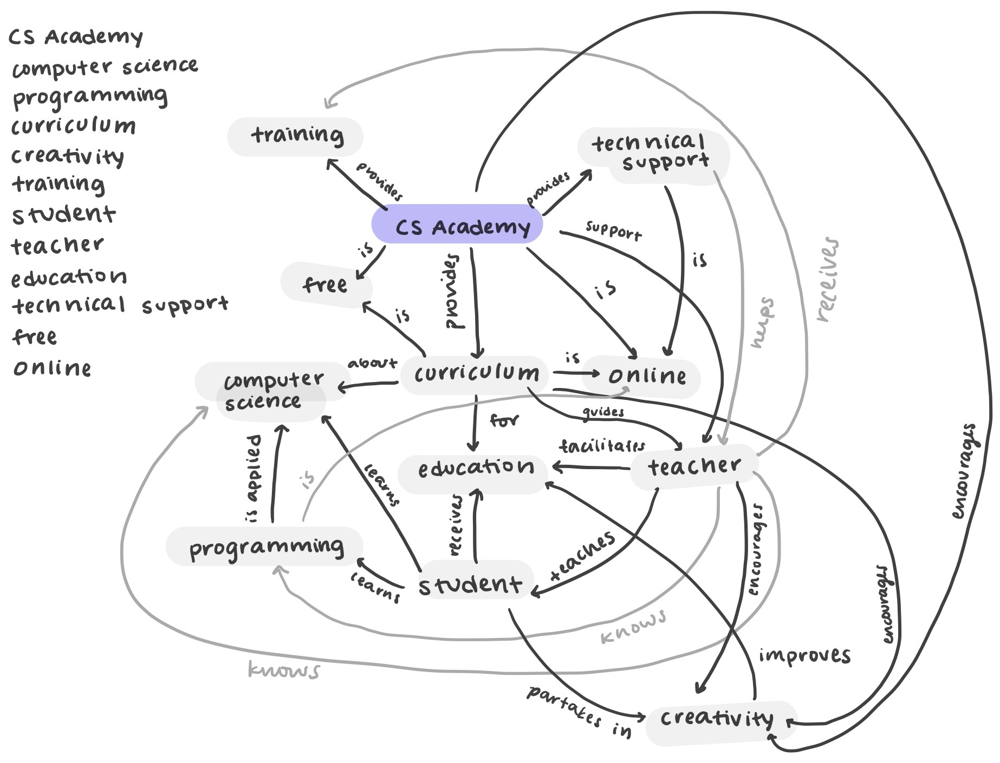
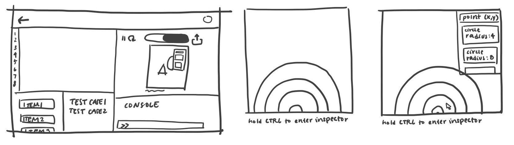
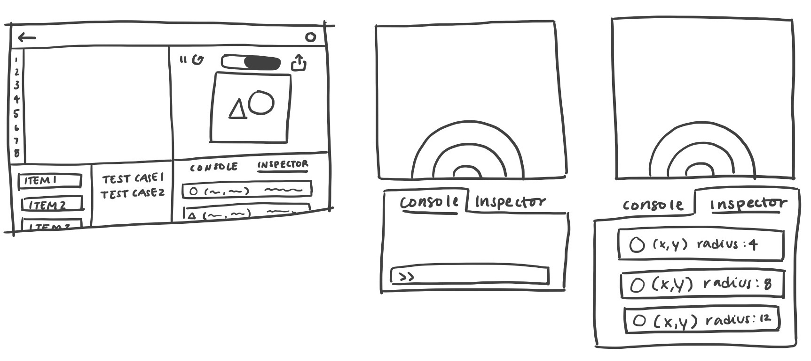
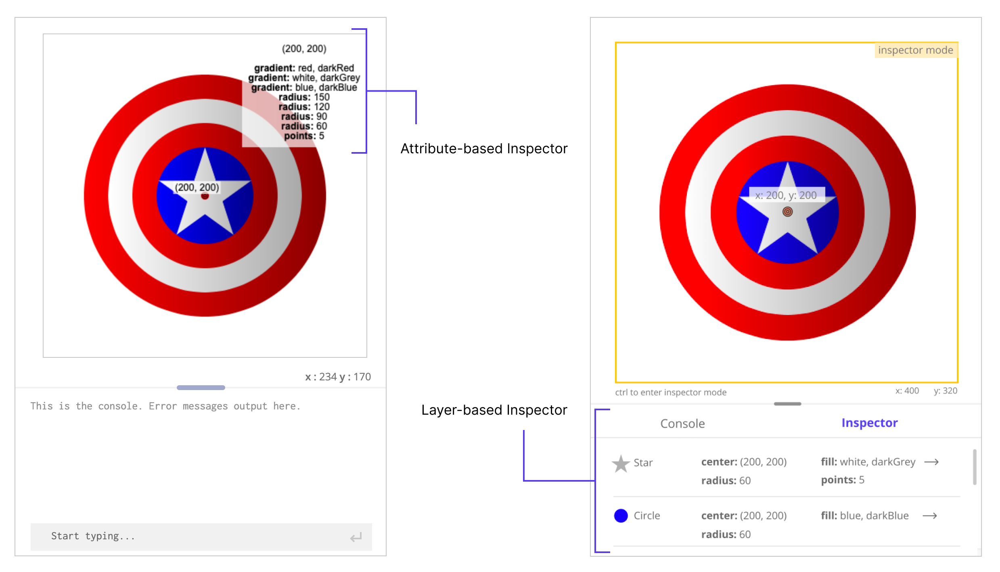
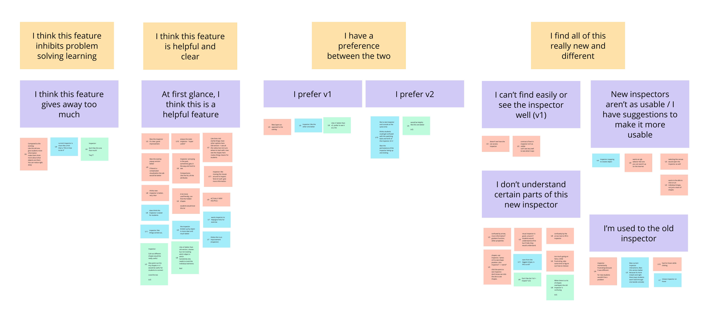
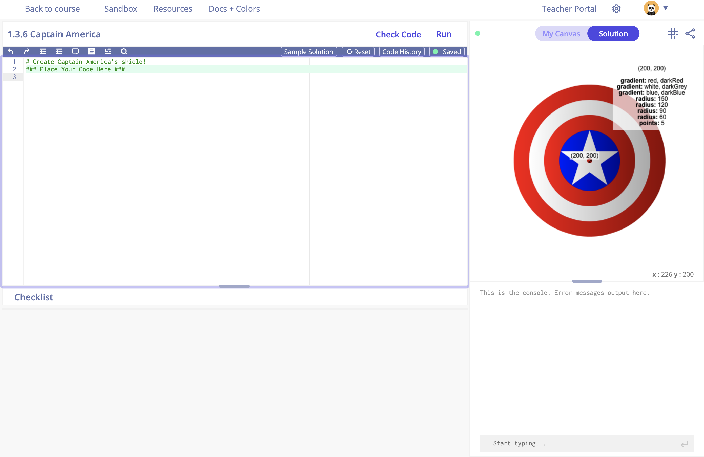

CMU CS Academy
Redesigning an online, interactive, educational platform for high school, computer science classrooms
-
Background
-
CMU CS Academy is a project in Carnegie Mellon University that provides high school teachers with free, online, interactive computer science curriculum. Through an online platform, CMU CS Academy not only provides teaching material and programming exercises, but also an integrated development environment (IDE), grading tools, and more. As more teachers began to use the products and services CMU CS Academy provided, problems with CMU CS Academy's existing website began to surface. In the Summer of 2020, CMU CS Academy's website underwent a total redesign. Before I joined the team, a new information architecture and design system had already been created for the website redesign.
-
Overview
-
The primary task was to redesign the teacher-facing and student-facing user interfaces which included the textbook, IDE, and class management tools. Secondarily, I redesigned informational pages for the website such as the About page and a splash page for a graphics package that had just been developed. The rest of this case study will specifically focus on the exercise IDE and all the research, designing, and testing that went behind it.
Previous Exercise IDE
Redesigned Exercise IDE
-
Research
-
I began my design process with a concept map to better understand the domain in which CMU CS Academy existed. From this map, I gathered that one of the most critical and influential parts of CMU CS Academy was the teacher. I also looked through help desk tickets submitted by teachers and students to collect common pain points of the current IDE interface. Additionally, I looked at other computer science educational platforms such as Codecademy and Code.org to see what others have done in this domain, doing an informal competitive analysis.
-

CMU CS Academy Concept Map
-
Definition
-
From the concept map, help desk tickets, and exploration of other educational content providers, the team and I identified 2 problems in particular to address in our redesign:
Problem 1
- Teachers and students struggle to understand and correctly use the programming checklist and its test cases.
Problem 2
- The inspector tool is too difficult to use. It's confusing and opaque.
-
Explorations
- I was assigned to specifically focus on problem 2. The inspector is a tool used in the IDE to identify the location, color, shape, and other attributes of objects on the canvas. I created sketches of the possible interactions users could have with the inspector tool and corresponding screens for those interactions, including the current implementation. For the latter sketch, I took inspiration from graphic design softwares that employ layers to organize the elements on a page.
- 
- 
-
To get an idea if I was on the right track, I set up a call with the development and content creation team to talk about the initial ideas I had.
Design Constraint
- There exists a delicate balance between ease of use and educational friction. Intentional friction can lead to better learning outcomes.
-
Prototyping
- Then, I used Figma to create prototypes of the inspector interactions. While creating these higher fidelity mockups, I designed through CMU CS Academy's new design system.
- 
-
User Testing
- After integrating my prototypes with the prototypes of other features my teammates designed that addressed problem 1, we tested the new design with current teachers and students giving them tasks to complete given this new interface. We captured their feedback and created affinity diagrams for each feature.
- 
-
Results
- The layer-based inspector led to quicker completion times, but each inspector design took the same amount of time for the user to orient themselves. So, from the moment of seeing the new inspector to the moment they wrote the first line of corresponding code was similar. In the comparison reflections, we found that students responded neutrally between the two, but among teachers we actually discovered a lot of polarization. Some users were appreciative of the new interaction, calling it helpful and clear, while others thought it detracted from the learning experience. Among the teacher coaches, we received a unanimous response that the attribute-grouped inspector was preferred because more deductive reasoning they felt was critical to building student's problem solving skills.
-
Final Iteration
- 
-
Reflection
-
Looking back on this project, one of the biggest takeaways I learned was the importance of collaboration early on in the design process. Talking with the development team and the content team early in the process allowed the design team to prioritize constraints that ultimately drove the final decisions we made about the interface. Also, one of the highlights of this project for me was the cross-functional communication I was able to have with the other teams, translating their needs and goals into a multi-faceted solution.
Throughout this project, my greatest concern was to stay true to the findings that revealed themselves, fervently holding onto them no matter how tricky the design process was, because I knew that they'd make the best solution for the students and teachers I was designing for. I hope to continue to stay true to finding amidst complex problems and press on for simple solutions for the sake of my users.